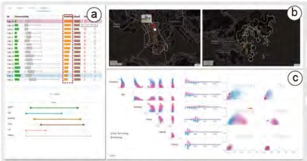

All Publications
2024
CheetahTraj: Efficient Visualization for Large Trajectory Dataset with Quality Guarantee
IEEE Transactions on Knowledge and Data Engineering (TKDE),
2024. Accepted.

MetroBUX: A Topology-based Visual Analytics for Bus Operational Uncertainty EXploration
IEEE Transactions on Intelligent Transportation Systems
(TITS), 2024. Accepted.

2023
QEVIS: Multi-grained Visualization of Distributed Query Execution.
IEEE Transactions on Visualization and Computer Graphics
(TVCG), 2023. Accepted.

Data-Scarce Animal Face Alignment via Bi-Directional Cross-Species Knowledge Transfer.
Proceedings of the 31th ACM international conference on multimedia
(MM), 2023, Accepted.

DiffSeer: Difference-Based Dynamic Weighted Graph Visualization.
IEEE Computer Graphics and Applications (CG&A), 2023, Accepted.
DHive: Query Execution Performance Analysis via Dataflow in Apache Hive.
Proceedings of the 49th International Conference on Very Large Data
Bases (PVLDB, Demo), 2023, Accepted.
Analyzing and Combating Attribute Bias for Face Restoration.
Proceedings of 32nd International Joint Conference on Artificial
Intelligence (IJCAI), 2023, Accepted.
2022
GHive: Accelerating Analytical Query Processing in Apache Hive via CPU-GPU Heterogeneous Computing.
Proceedings of the 13th Symposium on Cloud Computing (SOCC),
2022, Accepted.
GHive: A Demonstration of GPU-Accelerated Query Processing in Apache Hive.
Proceedings of the ACM Conference on Management of Data (SIGMOD,
Demo),
2022, Accepted.

CheetahKG: A Demonstration for Core-based Top-k Frequent Pattern Discovery on Knowledge Graphs.
Proceedings of the 2022 IEEE 38th International Conference on Data
Engineering(ICDE, Demo),
2022, Accepted.
2020
Visual Interpretation of Recurrent Neural Network on Multi-dimensional Time-series Forecast.
2020 IEEE Pacific visualization symposium (PacificVis),
2020, Accepted.
CheetahVIS: A Visual Analytical System for Large Urban Bus Data.
Proceedings of the 46th International Conference on Very Large
Database(PVLDB, Demo),
2020, Accepted.
CPRAISE-HK: A personalized real-time air quality informatics system for citizen participation in exposure and health risk management.
Sustainable Cities and Society,
2020, Accepted.
2019
Route-aware edge bundling for visualizing origin-destination trails in urban traffic.
Computer Graphics Forum (Proc. EuroVis 2019), 2019, Accepted.

The visual quality of streets: A human-centred continuous measurement based on machine learning algorithms and street view images.
Environment and Planning B: Urban Analytics and City Science,
2019, Accepted.
The visual quality of streets: A human-centred continuous measurement based on machine learning algorithms and street view images.
Proceedings of the 2019 CHI conference on human factors in computing
systems (CHI), 2019, Accepted.
2017
StreetVizor: Visual exploration of human-scale urban forms based on street views.
IEEE Transactions on Visualization and Computer Graphics
(TVCG), 2017, Accepted.

Spatio-temporal flow maps for visualizing movement and contact patterns.
Visual Informatics, 2017, Accepted.
A visual analytics approach for understanding egocentric intimacy network evolution and impact propagation in MMORPGs.
In 2017 IEEE Pacific Visualization Symposium(PacificVis), 2017,
Accepted.
2016
Nameclarifier: A visual analytics system for author name disambiguation.
IEEE Transactions on Visualization and Computer Graphics
(TVCG), 2016, Accepted.

Evaluation of graph sampling: A visualization perspective.
IEEE Transactions on Visualization and Computer Graphics
(TVCG), 2016, Accepted.
MENA: Visual analysis of multivariate egocentric network evolution.
In 2016 International conference on virtual reality and visualization
(ICVRV), 2016, Accepted.
2015
AmbiguityVis: Visualization of ambiguity in graph layouts.
IEEE Transactions on Visualization and Computer Graphics
(TVCG), 2015, Accepted.
Handbook of Operating System Course Projects.
China Machine Press, ISBN: 978-7-111-48416-5, 2015.